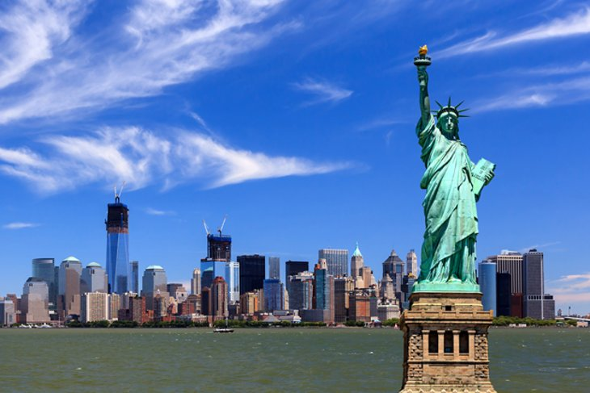
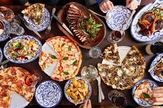

Newyork
Tourist Places
Paris is rich in history, art, and culture, with many things to see and do.
Some highlights include the Eiffel Tower, the Musée du quai Branly, and Montmartre.
Eiffel Tower: Paris' most recognizable landmark
Arc de Triomphe: A triumphal arch built in the 19th century that's the largest of its kind in the world
Louvre Museum: The world's most visited museum
Palais Garnier: An ornate opera house
Champs Elysees: A stunning avenue
Place dela Concorde: One of the largest squares in France
Seine River: France's second largest river
Disneyland Paris: A modern attraction in the suburbs



FOODS
The first café in Paris was Café Procope, which opened in 1686. It was a bright,
sophisticated place that became famous with actors and bowlers.
Menu: Many Parisian cafés serve a full menu, including breakfast, lunch, and dinner.
Drinks: In addition to coffee, you can order wine, beer, or pastis (an aniseed-flavored spirit).
Outdoor seating: Many cafés have outdoor seating on sidewalks, which can create a lively atmosphere.
People-watching: You can spend hours people-watching at a café, especially on the terrace.
Historic figures: Many famous people have frequented Parisian cafés, including Voltaire,
Rousseau, Benjamin Franklin, Ernest Hemingway, and Pablo Picasso.
Modern cafes: In addition to traditional cafés, Paris also has many new-wave coffee shops that serve specialty coffee.
Seine River: France's second largest river
Disneyland Paris: A modern attraction in the suburbs
